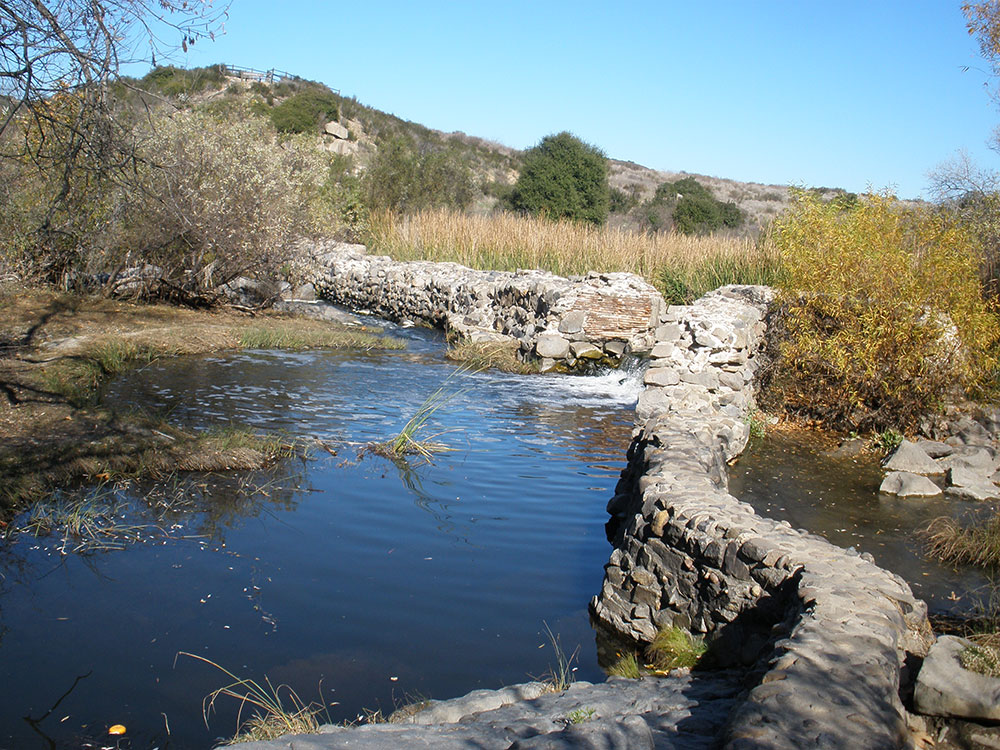

7,220-acre open space preserve within the city of San Diego, consisting mostly of rugged canyons and hills, with both natural and developed recreation areas
General Information
Visitor Center: 9:00am to 5:00pm (closed major holidays)
How to Get There
From Downtown San Diego (8 mi): Take I-8 E, exit at Mission Gorge Road/Fairmount Avenue, head north on Mission Gorge Road, then turn left onto Father Junipero Serra Trail to reach the Visitor Center and main park entrance.
Overview
Mission Trails Regional Park is a 7,220-acre open space preserve within San Diego, established in 1974 and among the largest urban parks in the country, with rugged canyons, chaparral hills and the San Diego River. It has about 60 miles of hiking, mountain biking and equestrian trails, a rock climbing area and a visitor center with exhibits and a theater. The most popular hike, the Cowles Mountain Trail, climbs to the highest point in San Diego, at 1,592 feet, with a 360-degree view of the county.
Other highlights include the Old Mission Dam, built to irrigate farmland for Mission San Diego de Alcalá, the first California mission, Lake Murray, stocked with trout and bass, and the Kumeyaay Lake Campground with 46 sites. West Sycamore, opened in 2014, added about 1,100 acres.
Things to Do
Explore One of the Largest Urban Parks in the United States
Mission Trails Regional Park encompasses approximately 8,000 acres of natural open space in San Diego and is one of the largest urban parks in the country. The park features rugged hills, chaparral-covered mountains, native habitats, historic sites, and extensive trail systems, providing visitors with abundant opportunities for outdoor recreation and nature exploration.
Climb to the Summit of Cowles Mountain
Cowles Mountain is the highest point within the City of San Diego and one of the park's most popular destinations. Visitors who reach the summit are rewarded with panoramic views of San Diego, the Pacific Ocean, surrounding mountains, and, on clear days, distant desert landscapes.
Visit the Mission Trails Regional Park Visitor and Interpretive Center
The park's visitor center features exhibits covering local geology, wildlife, plant communities, Native American history, and regional conservation efforts. Educational displays, observation areas, and interpretive programs provide visitors with a deeper understanding of the park's natural and cultural resources.
Discover Lake Murray
Located within the park, Lake Murray offers opportunities for walking, jogging, fishing, boating, birdwatching, and picnicking. The scenic reservoir is a popular destination for families and visitors seeking a relaxing outdoor experience.
Explore Historic Old Mission Dam
Old Mission Dam is one of California's most important historic landmarks. Constructed in the early nineteenth century by Spanish missionaries, the dam helped support Mission San Diego de Alcalá and remains one of the oldest surviving examples of Spanish colonial engineering in the United States.
Enjoy Wildlife Viewing and Nature Photography
The park supports a wide variety of wildlife, including mule deer, coyotes, bobcats, hawks, owls, reptiles, and numerous bird species. The diverse landscapes and seasonal wildflower displays make Mission Trails Regional Park a popular destination for photographers and nature enthusiasts.
Top Trails
Cowles Mountain Trail
Length: Approximately 3 miles round trip
Elevation Gain: About 950 feet
Difficulty: Moderate
The park's signature trail leads to the summit of Cowles Mountain, offering spectacular 360-degree views of San Diego County. It is one of the most popular hiking trails in Southern California.
South Fortuna Mountain Trail
Length: Approximately 5.5 miles round trip
Elevation Gain: Significant
Difficulty: Difficult
This challenging hike includes steep climbs, rocky terrain, and a well-known stair section leading to panoramic viewpoints overlooking the park and surrounding region.
Oak Canyon Trail
Length: Approximately 2.5 miles round trip
Elevation Gain: Moderate
Difficulty: Easy to Moderate
One of the park's most scenic trails, Oak Canyon travels through shaded woodlands, seasonal streams, and native habitats, offering a peaceful contrast to the park's more rugged mountain routes.
Lake Murray Trail
Length: Approximately 3.2 miles loop
Elevation Gain: Minimal
Difficulty: Easy
This family-friendly trail circles Lake Murray and provides beautiful water views, birdwatching opportunities, and a paved route suitable for walking, jogging, and casual recreation.
Sources: Mission Trails Regional Park official information, including details on Cowles Mountain, Old Mission Dam, Lake Murray, hiking trails, wildlife viewing, educational programs, and visitor amenities.
https://mtrp.org/https://mtrp.org/
Additional information verified through City of San Diego and Mission Trails Regional Park resources covering trail systems, conservation efforts, interpretive programs, recreation opportunities, and historic landmarks within Mission Trails Regional Park.
https://www.sandiego.gov/park-and-recreation/parks/regional/missiontrailshttps://www.sandiego.gov/park-and-recreation/parks/regional/missiontrails
This article uses material from the Wikipedia article "Mission Trails Regional Park", which is released under the Creative Commons Attribution-Share-Alike License 3.0
Featured Locations and Trails
